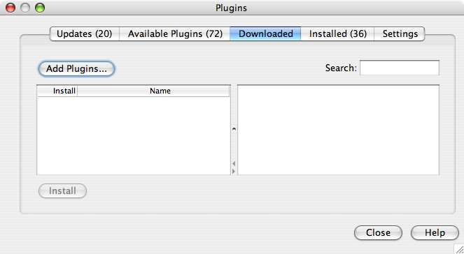
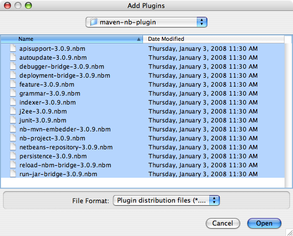

Exercise 0: Configuring your environment
Step-by-Step Instructions:
The following steps will guide you through setting up the environment necessary to complete this lab. This consists of the following steps:
Steps:
-
Install GlassFish v3.
- GlassFish v3 is already installed when you unzip the lab .zip
file, it can be found at:
gfplugin/glassfish/. Please use this copy of GlassFish as it has been tested with this lab.
- GlassFish v3 is already installed when you unzip the lab .zip
file, it can be found at:
-
Install Maven.
- Download Maven 2 from
http://maven.apache.org/download.html.
This page also contains instructions you should follow to
install maven on your machine, please follow these
instructions.
A copy of maven 2.0.9 is already installed when you unzip the lab .zip file, it can be found at :gfplugin/maven2/maven-2.0.9. You can set your MAVEN_HOME to this directory and addgfplugin/maven2/maven-2.0.9/binto your PATH.
- Download Maven 2 from
http://maven.apache.org/download.html.
This page also contains instructions you should follow to
install maven on your machine, please follow these
instructions.
-
Configure NetBeans (only if you use NetBeans).
- Install NetBeans. (Skip if you already
have NetBeans 6+ installed.)
- Download NetBeans from http://www.netbeans.org.
- Follow the installation instructions on the NetBeans website to install NetBeans.
- Launch NetBeans 6.
- On Windows: Start --> Programs --> NetBeans IDE --> NetBeans IDE 6.0 --> NetBeans IDE
- On Solaris™ or Linux: open a terminal window, and type:
netbeans
- Ensure the Maven 2 plugin for NetBeans 6.0 is installed.
This plugin is required in order to open the project in NetBeans 6.0. The Maven 2 plugin is available in the
gfplugin/maven2/maven-nb-pluginsdirectory.- Choose Plugins from the Tools menu.
- Select the Downloaded tab
- Press the Add Plugins... button
- Navigate to
gfplugin/maven2/maven-nb-pluginsdirectory - Select all the .nbm files and Press Open button.
- Press the Install button to start the installation


 Figure 0-1: Installing the Maven Plugin
Figure 0-1: Installing the Maven Plugin
Additional Information:
- For more information regarding the GlassFish v3 development environment and workspace, refer to the build instructions at: http://wiki.glassfish.java.net/Wiki.jsp?page=V3FullBuildInstruction.
- Install NetBeans. (Skip if you already
have NetBeans 6+ installed.)